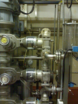
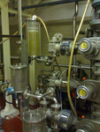
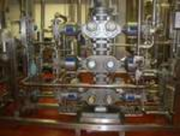
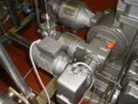
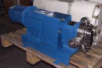

Componenti guasti e/o da revisionare
Nelle due fotografie seguenti, esempi di componenti meccanici smontati da un impianto in corso di revisione. Oltre alle normali sostituzioni delle parti soggette ad usura (come guarnizioni, anelli di tenuta e simili) è spesso necessaria una verifica più accurata, che comprende:
- smontaggio del componente in tutte le sue parti
- pulizia ed eventuale rettifica di tutte le parti meccaniche
- sostituzione preventiva di tutte le parti perticolarmente soggette a pressioni, vibrazioni, torsioni
- Revisione completa dell'impianto elettrico
- Montaggio e collaudo
Impianti di miscelazione revisionati
Particolari di grandi impianti di miscelazione, revisionati da noi.




Componenti revisionati
Un componente d'impianto revisionato al banco e pronto per essere installato.
